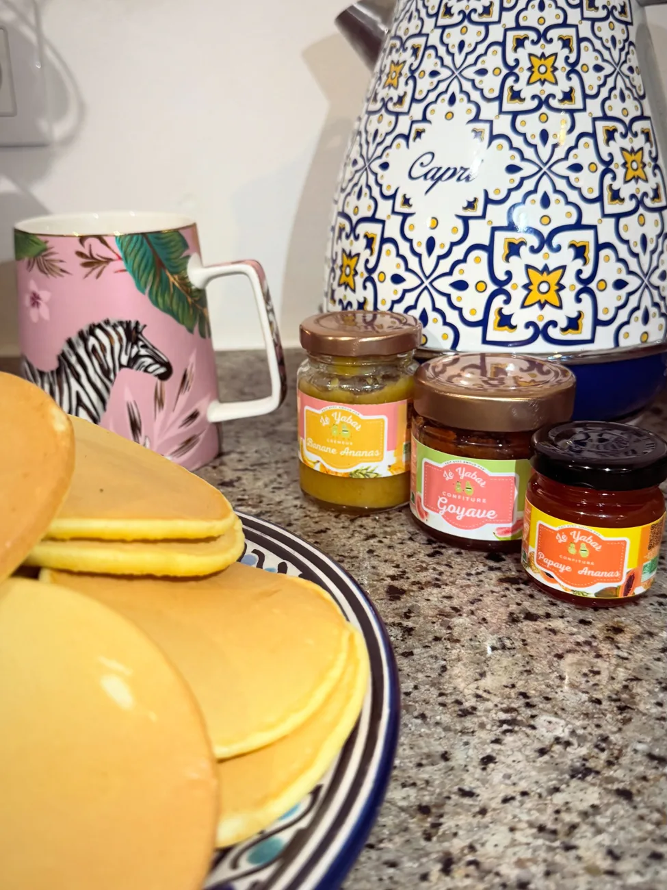
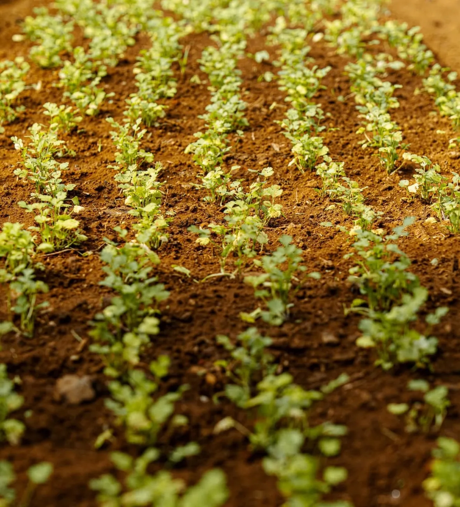
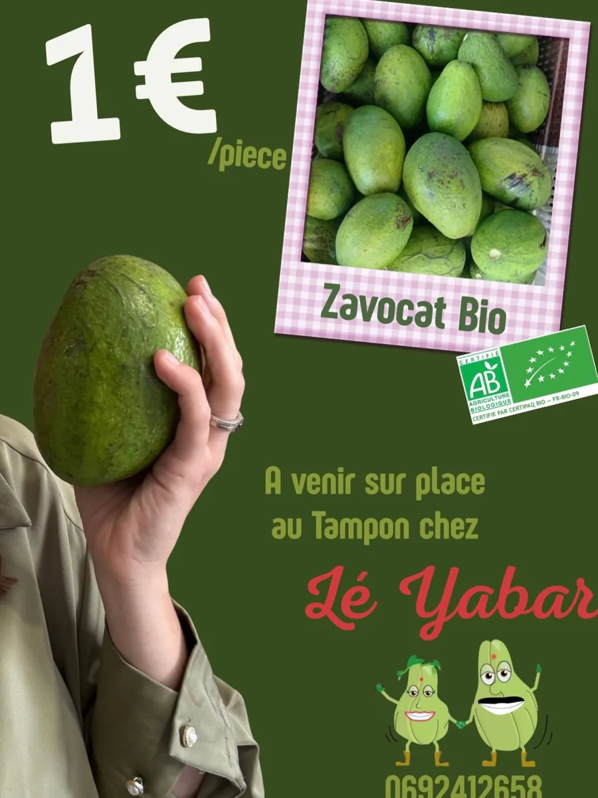

Grand Tampon · bio · depuis 2017
Lé Yabar cultive des fruits et légumes bio au Grand Tampon, et les transforme en confitures, sirops, pâte de piment, galabé et ail noir.


Le garde-manger
Et beaucoup d'amour dans chaque pot : tout part des parcelles de la famille, au Grand Tampon.
Un assortiment pour accompagner les pancakes du matin.
Les fruits de l'île, en bouteille.
Le caramel péi à base de jus de canne.
Et sa tapenade, une spécialité de la maison.
À la ferme
La famille ouvre les portes de l'exploitation : on marche entre les cultures, on goûte, on cuisine.
Au marché
Salades, brèdes, betteraves et les produits de la maison : suivez la page pour les prochains rendez-vous au Jardin de l'État.
Mariages et événements
Des petits pots de confiture, de sirop ou de pâte de piment bio, personnalisés avec vos prénoms et la date du grand jour, pour que vos invités repartent avec un cadeau gourmand et péi.
Léa & Théo
12 · 06

À la ferme, en direct
Avocats certifiés bio et produits de saison, à venir chercher sur place au Grand Tampon. Les arrivages sont annoncés sur la page.
Une visite, un atelier, une commande pour un événement : un appel suffit.